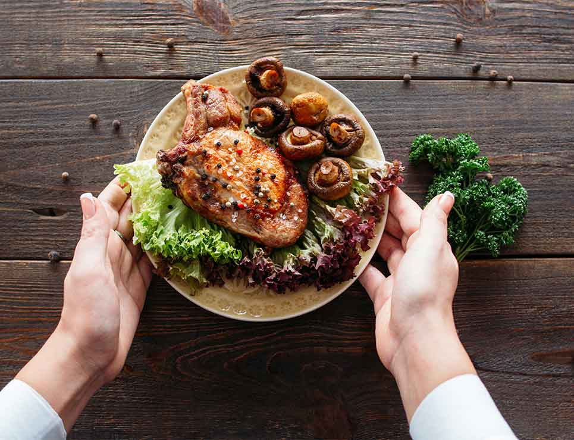
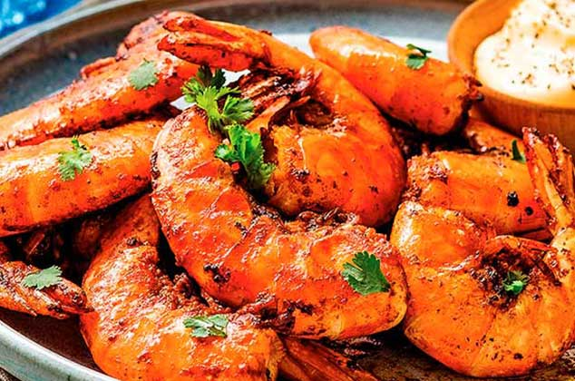
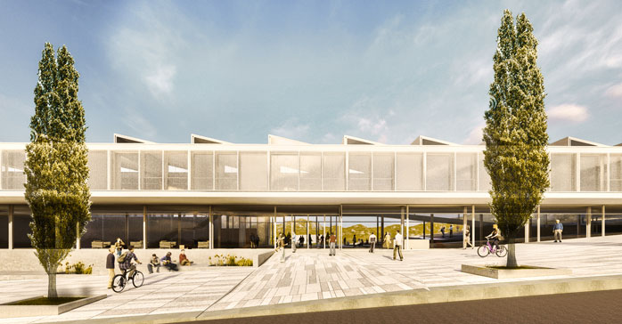

Gastronomía
Cultura
Ocio

Gastronomía |
Restaurantes |  |
| Sidrerías y asadores | ||
| Bodega de vino y txakoli | ||
| Productos tipícos |  | |
| Escuelas de hostelería | ||
Cultura |
Archivos y bibliotecas |  |
| museos | ||
| palacios de congresos | ||
| ferias de muestras | ||
Ocio |
Entretenimiento y diversión | |
| Ocio cultural | ||
| Excursiones y deporte | ||
REGRESAR A PÁGINA PRINCIPAL | ||